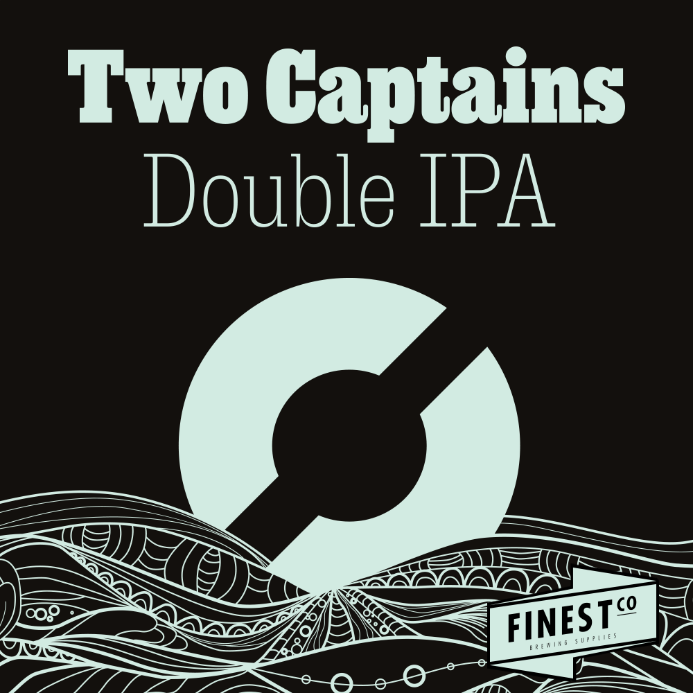

_ _ _______ _______ ________ _________ .__ __ __
__| || |_\ _ \ \ _ \ \_____ \ / _____/ ____ ___//| |__ _____/ |__/ |______
\ __ / /_\ \/ /_\ \ / ____/ ______ \_____ \ / \ / _ \| | \_/ __ \ __\ __\__ \
| || |\ \_/ \ \_/ \/ \ /_____/ / \ | ( <_> ) Y \ ___/| | | | / __ \_
/_ ~~ _\\_____ /\_____ /\_______ \ /_______ /___| /\____/|___| /\___ >__| |__| (____ /
|_||_| \/ \/ \/ \/ \/ // \/ \/ \/

Denne legendarisk dobbel IPA'en er inspirert av
selveste Russian River's "Pliny the Elder", og
ble første gang brygget i 2010 av Jan Halvor Fjeld.
Den var så god at den vant NM i hjemmebrygging i
samme slengen, og han fikk gleden av å brygge dette
sammen med Kjetil Jikun hos Nøgne Ø. Både Kjetil og
Jan Halvor har bakgrunn som piloter, og da falt jo
navnet naturlig nok til "Two Captains"
Two Captains er en klassisk amerikansk dobbel IPA.
Mørk gylden med en solid ryggrad av engelsk Marris
Otter, noe som trengs for å bære all humlen. Og her
brukes det solide mengder med Columbus, Simcoe og
Centennial, noe som gir deilige og intense florale
og tropiske noter. Dette ølet ble en kjempesuksess
for Nøgne og er fortsatt norges mestselgende Dobbel
IPA. Vi er derfor kjempefornøyde med å kunne levere
dette ølsettet til øltørste nordmenn over hele
landet.
- - - - - - - - - - - - - - - - - - - - - - - - - - -
ABV: 8,3%
Antall flasker: 34
Bryggmester: Eirik
Bryggedag: 23.03.2021
Flaskedato: 06.04.2021
Drikkeklar: 20.04.2021